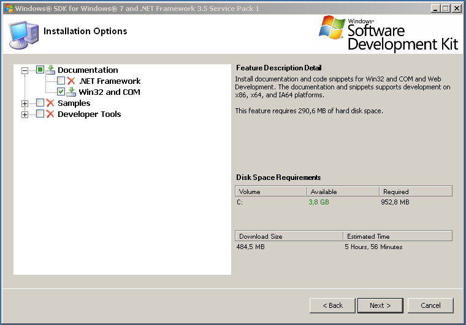
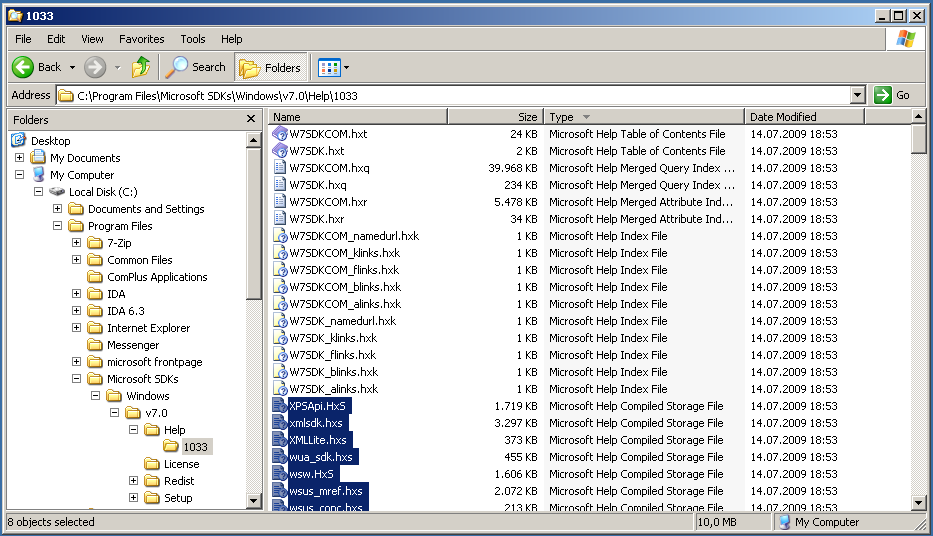
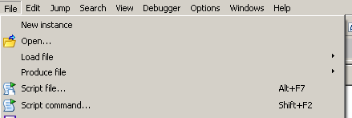
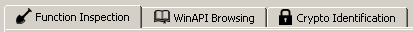
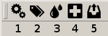
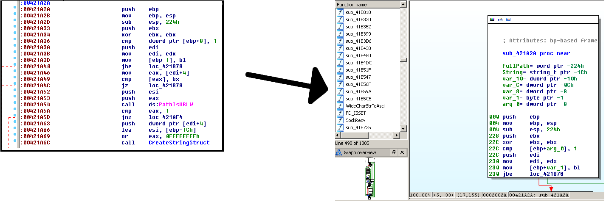
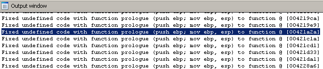
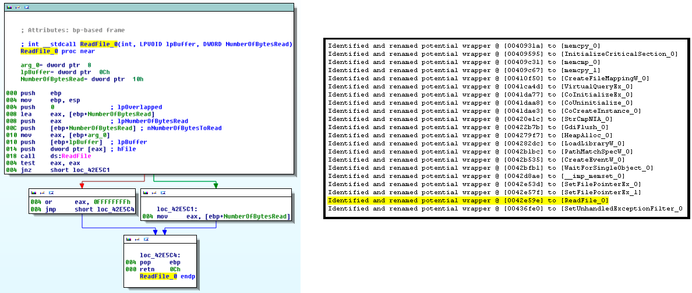

[Release version: 1.0a - Date: 18.09.2012]
This is the guide to IDAscope, a plugin intended to ease reverse engineering with a focus on malware analysis. The idea for the plugin was born at RECON 2012 out of some prototype scripts. IDAscope is written in pure Python with a PySide based GUI.
The authors of IDAscope are:
This section covers the requirements and installation process for IDAscope.
This release version of IDAscope has the following package structure:
IDAscope has been tested with IDA Pro 6.2 and 6.3 for Windows, OS X, and Linux. The GUI of IDAscope is based on PySide. It is required to install PySide as provided by Hex-Rays on their website.
The description of the installation process is divided into two steps: for IDAscope itself and for the information database needed by the WinAPI Browsing functionality.
Installation of IDAscope is pretty straight forward. Just unpack the contents of the zip file in a location accessible by IDA Pro.
Depending on the operating system you are using, you may have to adjust the settings in the config.json in IDAscope's root directory. If "idascope_root_dir" is left as an empty string like the standard setting suggests, the paths should be automatically resolved by the plugin.
The setup for browsing Windows API documentation from within IDA needs a bit more effort. The files that constitute the information database for this functionality are included in Windows SDK version 7 (published 24.07.2009) and must be extracted manually in order to be directly accessible.
The installation procedure is described in 4 steps.
For installation of v7 of the Windows SDK, .NET framework 3.5 is required IT can be downloaded here.
After installing .NET 3.5, Windows SDK v7 can be downloaded from this website and be installed.
Not the whole SDK is needed, it is enough to limit the installation to "Documentation / Win32 and COM".
With the Windows SDK installed, we can now extract its help database and make it usable for IDAscope. First, we need to gather the compressed files of filetype "Microsoft Help Compiled Storage" (*.HXS) from the Windows SDK installation directory.
If no alternative installation path has been chosen, the files should remain in "C:\Program Files\Microsoft SDKs\Windows\v7.0\Help\1033". Otherwise, the path will be "$CUSTOM_DIR\Windows\v7.0\Help\1033".
This folder should contain a total of 249 *.hxs files that have a combined size of 244 MB. These files need to be copied to another folder, e.g. the standard IDAscope WinAPI folder "C:\WinAPI".
The last step is decompressing the compiled help files in order to obtain the contained HTML files. Assuming the files have been copied to "C:\WinAPI", it suffices to unzip the files with a tool like 7zip into the same folder. After decompressing, the *.hxs are of no further use and may be deleted.
It is known that the installation of Python and PySide for IDA Pro on a 64bit Windows 7 can interfere with an already existing Python installation. The reason for this is that IDA Pro relies on a 32bit version of Python. In case a 64bit version of Python had been installed prior to installation of IDA Pro, it may come to path conflicts that deny importing the PySide module from within IDA Pro. In this case, IDAscope will not work in this system setup.
It has been reported that under yet unknown circumstances the extension may have a long loading time (30+ seconds) when preparing the keyword database for the WinAPI widget. This is going to be addresses in a future release by changing the storage format of the database and its loading mechanism. If you do not want to use the WinAPI database at all, you can disable it via config.json by changing the key "load_keyword_database" under "winapi" to false.
IDAscope is intended to be as self-contained as possible, thus no 3rd party dependencies are required for this release version.
In order to start IDAscope, load a binary for analysis and then from IDA Pro's menu select "File / Script file ...".
After some initialization, the GUI of IDAscope should pop up.
IDAscope's functionality is organized in widgets, accessible through tabs.
This version contains widgets for
The widgets are described in more detail in the following sections.
The first widget to be described (which is responsible for the idea of building IDAscope) is Function Inspection. It is mainly motivated by the common workflow used by many reverse engineers when dissecting an unknown malware sample. Similar to a puzzle, one will normally start with the cornerstones, which in terms of reverse engineering would be strings and imported API functions. Strings may reveal already a lot about maybe included functionality or command sets, while imported API functions outline the semantics of the functions that make use of them. While strings often require manual interpretation, API inspection allows for a certain degree of automation.
Therefore, the Function Inspection widget has the goal to provide an overview of occurrences of API calls, grouped by their semantics and the functions containing them.
The widget consists of a toolbar and three tables. The toolbar buttons have the following functionality:
This will rescan the loaded analysis subject and update the counts and names of the functions.
IDAscope can perform a basic renaming of functions according to the identified semantics of used API calls. A function that would make use of API functions manipulating files would be prepended with the tag "File", changing its name from "sub_c0ffee" to "File_sub_c0ffee".
IDAscope supports coloring of basic blocks according to the semantics of API calls present in those. This allows quicker spotting of those calls along the execution flow and a better overview when zooming out of the graph.
IDA Pro is a very powerful disassembler. Still, there might be some cases where it is not possible to decide how potential code should be transformed into functions, leaving red areas in the Navigation Bar. This button fixes those areas, by first identifying and converting potential function prologues (push ebp; mov ebp, esp) and then all other code to functions.
This function action looks like the following:
Giving all converted code locations in the output window:
Code often contains wrapper functions, i.e. short functions with only one API call and a few checks for border values etc. Those can be heuristically identified and renamed. Thanks to Branko Spasojevic for providing the code for this.

As explained earlier, Function Inspection summarizes occurrences of API functions. This is solved through the three tables. The topmost table (function table) contains a listing of function addresses, names and the number of identified API calls belonging to a certain tag. It can be taken as birds-eye like overview of on the functions. Just looking at the combination of tags may already allow to make assumptions about the function contents. For example, a combination of the tags "File" and "Http" or "File" and "Ws2" may indicate downloading functionality.
The lower left table (calls table) gives a summary of all concrete API functions used in the function selected in the function table. This is useful to confirm a guess made upon the tags as shown by the function table. For example, a listing of API calls in the sequence (DeleteFile, CreateFile, WriteFile) may indicate replacement of a file.
The lower right table (parameter table) furthermore lists the parameters associated with the API call selected in the calls table. Currently, this is of limited use as no dataflow tracking is performed on these values to provide concrete references. However, it can be used to directly navigate to the responsible assembly instructions.
As it is not possible to memorize all the information about API calls one encounters during reverse engineering, frequent visits of the MSDN website are usually the result. Changing the window focus and entering a search term does not only cost time but is also a distraction. The widget WinAPI Browsing makes MSDN information available directly from within IDA Pro.
To search for a API function name, parameter type, enum, just type in the search term. While typing, a suggestion box will pop up, showing keywords starting with the characters already typed.
Accessing multiple articles or clicking links from within the browser will furthermore build up a history of visited articles that can be navigated by the arrow buttons.
Because even typing breaks workflow, a shortcut can be used to look up the currently highlighted identifier via WinAPI Browser. In the standard configuration, this is <CTRL-Y>. However, the shortcut can also be changed in the configuration file.
A description of this widget is also covered in this blog post.
Notice: If you experience a very long loading time of the IDAscope extension, you can disable the WinAPI browsing feature to dramatically decrease the loading time. See "Known Issues" for more information.
This widget contains a classical signature-based approach for the detection of well-known crypto-algorithms as well a not-so-common heuristics-based approach. The toolbar features only one button that is used to start the scanning process.
The signature-based approach simply extracts the raw data from the given segments and searches with bytes patterns of signatures for their presence. It can both detect pre-calculated values that e.g. may be present in a data section (CRC tables, S-boxes, ...) as well as constants directly used in the code, i.e. the respective algorithms (CRC32 generator polynome, MD5 initialization values, ...). It covers more or less the same set of algorithms as the popular IDA plugin findcrypt2, but has been extended with signatures from the projects PyQemu by Felix Matenaar and kerckhoff's by Felix Gröbert.
The results of this identification method are presented in the lower table. The tree representation with the levels "Name", "Location", "Referenced By" allows easy access to both the raw byte shaving triggered the detection as well as all locations in the code where they may be used.
The heuristics-based approach is based on the academic work of Juan Caballero et al., presented in the paper "Dispatcher: Enabling Active Botnet Infiltration using Automatic Protocol Reverse-Engineering". The basic idea is to evaluate the ratio of arithmetic and logic instructions versus all instructions in a given basic block. The original paper featured a size of 20 instructions for a block and a percentage of 60% or more arithmetic/logic instructions.
The implementation in IDAscope gives the user various control bars to adjust the mentioned parameters almost seamlessly, thus finetuning the granularity for detection. The following control bars are given:
All of the bars allow limiting by an upper and lower bound and therefore selecting a range instead of chosing one threshold.
The Arit/Log Rating simply allows narrowing down the ratios to be considered. Raising this value will show only blocks with a high calculation portion but may miss some crypto candidates.
The Basic Block size can be both used to exclude small and large blocks, thus aiming at typical sizes for certain algorithms.
The number of allowed calls is counted per function instead of per basic block and turned out to be helpful in order to reduce false positives. By limiting this to a few calls (0, 1, 2), more or less self-contained functions can be selected.
The check boxes next to the bars give additional methods to reduce false positives or increase the accessibility.
A description of this widget is also covered in this blog post.